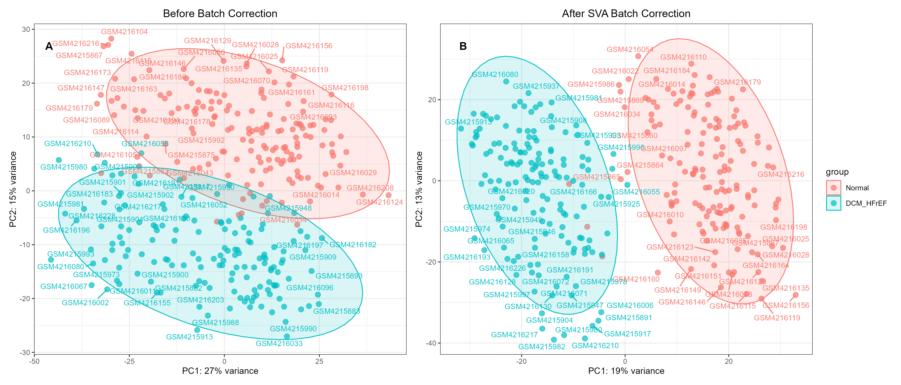

Supplementary Information
![]()
Supplementary Figure Legends
- Figure S1: PCA plots before and after batch effect correction.
- Before batch correction; (B) After batch correction. The proportion of variance explained by PC1 and PC2 is indicated on the axes.
Figure S2: Soft‑thresholding power determination and module identification in WGCNA. (Left) Scale‑free fit index as a function of soft‑thresholding power; (Right) Mean connectivity as a function of soft‑thresholding power.
Figure S3: Complete directed acyclic graphs (DAGs) for GO enrichment. Separate DAGs for biological process (BP), cellular component (CC), and molecular function (MF). Node color indicates enrichment significance.
Figure S4: Complete bubble plot of all significant KEGG pathways. All pathways with adjusted p‑value < 0.05 are shown. Bubble size represents gene count; color represents adjusted p‑value.
Figure S5: Variable selection plots for four machine learning algorithms.
- LASSO cross‑validation (lambda.min and lambda.1se). (B) SVM‑RFE accuracy curve. (C) Boruta feature importance (shadow features). (D) XGBoost feature importance (Gain).
- Figure S6: Cell type annotation of the single‑cell dataset. Left: UMAP embedding of all cells with cluster annotation. Right: dot plot of marker gene expression for each cluster.

Supplementary Tables
See supplementary/Supp_Tables.xlsx
Table S1: Composition of formula compounds. – Columns: Herb, Molecule name, IUPAC Name, Molecular formula, Molecular weight, PubChem CID, SMILES
Table S2: Candidate drug targets. – Columns: Target gene name, UniProt ID, Prediction platform (SwissTargetPrediction, STITCH, etc.), Included in intersection (Yes/No)
Table S3: Candidate disease targets. – Columns: Gene name, log2FC, adj. P‑value, DEG direction (up/down), WGCNA module assignment, Included in intersection (Yes/No)
Table S4: Full process of drug–disease target screening. – Columns: Gene name, CytoHubba scores for four algorithms, MCODE cluster ID, Hub gene (Yes/No), Final core gene (Yes/No)
Table S5: Performance metrics of the diagnostic model based on core genes.
- Columns: Dataset (training/test/validation1/validation2/…), Sample size (n), AUC (95% CI), Sensitivity, Specificity, Accuracy, Positive predictive value, Negative predictive value, F1 score